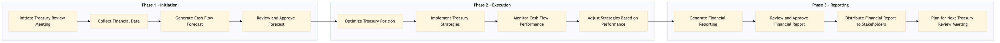

This process document outlines the FN-FP-07 Treasury and Cash Flow Management for Expedia Group (OTA) and Amex GBT / SAP Concur (TMC). It covers the initiation, planning, execution, monitoring, and reporting phases to ensure effective financial management.
| Trigger | Monthly financial report generation and quarterly treasury review meetings |
| Outcome | Accurate cash flow forecasts, optimized treasury positions, and timely financial reporting for stakeholders. |
| Systems | Expedia Open World Partner Central Amadeus NDC Sabre GDS Travelport EVC One Key TravelAds AWS SageMaker Snowflake Kafka Salesforce Tableau SAP Concur T2 SAP Concur Expense Amex GBT Neo/Complete SAP S/4HANA International SOS Cvent Amex Corporate Card VCN SAP Analytics Cloud Workday |

Click to enlarge
| Step | Name & Pain Point | Role | System | Input | Output | KPI | Flags |
|---|---|---|---|---|---|---|---|
| 1.1 | Initiate Treasury Review Meeting Low participation from cross-functional teams | Finance Manager | Salesforce | Monthly financial report | Agenda and action items for the meeting | Meeting attendance rate > 90% | ⚠ Exception |
| 1.2 | Collect Financial Data Inconsistent data formats | Financial Analyst | AWS SageMaker, Snowflake | Transaction data from OTA and TMC systems | Cleaned and consolidated financial dataset | Data accuracy rate > 95% | ⚠ Exception |
| 1.3 | Generate Cash Flow Forecast Volatility in travel industry | Financial Analyst | Tableau, Snowflake | Consolidated financial dataset | Cash flow forecast report | Forecast accuracy within ±5% | ⚠ Exception |
| 1.4 | Review and Approve Forecast Delayed decision-making | Finance Manager, CFO | Salesforce, Tableau | Cash flow forecast report | Approved cash flow forecast | Forecast approval time < 2 days | ◆ Decision |
| 1.5 | Optimize Treasury Position Market volatility | Treasury Manager | SAP S/4HANA, SAP Concur T2 | Approved cash flow forecast | Treasury optimization plan | Treasury position improvement > 10% | ⚠ Exception |
| 1.6 | Implement Treasury Strategies Resource constraints | Treasury Manager, Financial Analyst | SAP S/4HANA, SAP Concur T2 | Treasury optimization plan | Implemented treasury strategies | Strategy implementation time < 1 week | ⚠ Exception |
| 1.7 | Monitor Cash Flow Performance Data latency | Financial Analyst | Tableau, Snowflake | Implemented treasury strategies | Cash flow performance report | Performance monitoring frequency > weekly | ⚠ Exception |
| 1.8 | Adjust Strategies Based on Performance Inflexible strategies | Treasury Manager, Financial Analyst | SAP S/4HANA, SAP Concur T2 | Cash flow performance report | Adjusted treasury strategies | Strategy adjustment frequency > monthly | ◆ Decision |
| 1.9 | Generate Financial Reporting Complex reporting requirements | Financial Analyst, Finance Manager | Tableau, Salesforce | Adjusted treasury strategies | Monthly financial report | Report generation time < 3 days | ⚠ Exception |
| 1.10 | Review and Approve Financial Report Delayed decision-making | Finance Manager, CFO | Salesforce, Tableau | Monthly financial report | Approved financial report | Report approval time < 2 days | ◆ Decision |
| 1.11 | Distribute Financial Report to Stakeholders Communication breakdown | Finance Manager, CFO | Salesforce, Email | Approved financial report | Stakeholder communication plan | Report distribution time < 1 day | ⚠ Exception |
| 1.12 | Plan for Next Treasury Review Meeting Resource constraints | Finance Manager | Salesforce | Stakeholder feedback | Agenda and action items for the next meeting | Meeting preparation time < 1 day | ⚠ Exception |